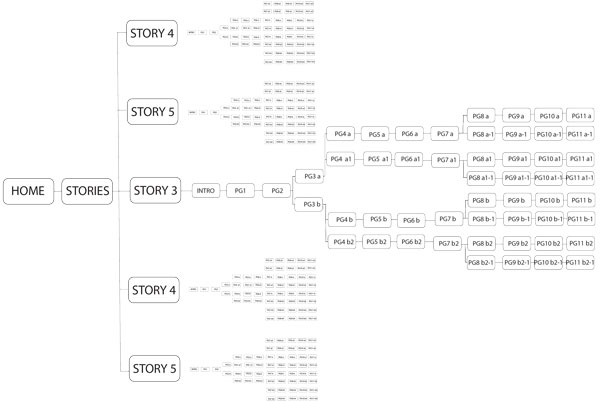

The site flow shows the breadth of the website I am creating. I believe I will only have time to finish one story during this class, but still this website will have quite a lot of pages. In each story there are options for the user to take a different track, making another path for the users to take.
